Causal Graphs
Directed Graph (A affects Y)
A and Y are known as nodes or vertices (variables)
The link (edge) between A and Y is an arrow, which means there is a direction (directed path)
Variables connected by an edge are adjacent

Undirected Graph (Association between A and Y)
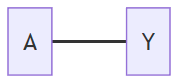
Directed Acyclic Graph (DAG)
- No undirected paths
- No cycles
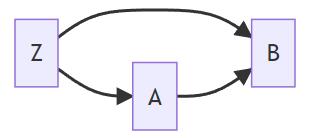
Terminology
A is Z’s parent
B is a child of Z
D is a decendant of A
Z is an ancestor of D
D has two parents, B and Z
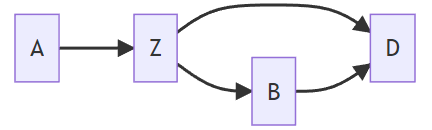
We use DAGs to help us determine the set of variables that we need to control in order to achieve ignorability.
Relationship with Probability Distributions
DAGs encode assumptions about dependencies between nodes.
Example 1
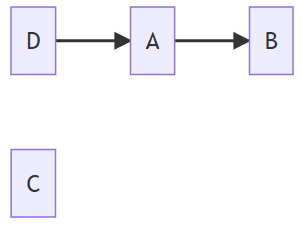
\(\Pr(C\mid A,B,D)=\Pr(C)\) i.e., C is independent of all variables
\(\Pr(B\mid A,C,D)=\Pr(B\mid A)\) i.e.,$ BD$, \(C \mid A\)
\(\Pr(B\mid D)\neq\Pr(B)\), because B and D are marginally dependent
\(\Pr(D\mid A, B, C)=\Pr(D\mid A)\)
Example 2
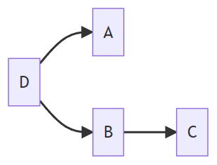
- \(\Pr(A\mid B,C, D)=\Pr(A\mid D)\) i.e., \(A\perp B,C\mid D\)
- \(\Pr(D\mid A, B,C)=\Pr(D\mid A,B)\) i.e., \(D\perp C\mid B\)
Example 3
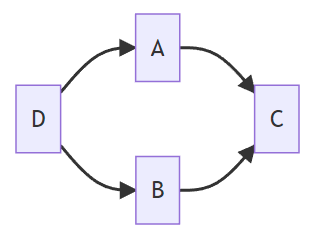
- \(\Pr(A\mid B,C, D)=\Pr(A\mid C,D)\) i.e., \(A \perp B \mid C, D\)
- \(\Pr(D\mid A, B,C)=\Pr(D\mid A,B)\) i.e., \(D\perp C\mid A, B\)
Decomposition of Joint Distribution
We can decompose the join distribution by sequential conditioning only on sets of parents.
Start with roots (nodes with no parents)
Proceed down the descendant line, always conditional on parents
Example 1
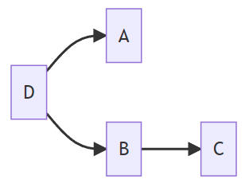
- One root, D; two children of D, A and B
- \(\Pr(A,B,C,D)=\Pr(D)\Pr(A\mid D)\Pr(B\mid D)\Pr(C\mid B)\)
Example 2
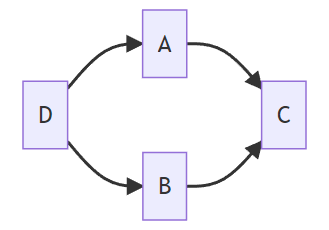
- \(\Pr(A,B,C,D)=\Pr(D)\Pr(A\mid D)\Pr(B\mid D)\Pr(C\mid A, B)\)
Paths and Associations
Type of Paths
Fork
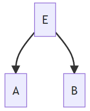
Chain
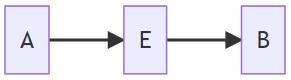
Inverted Fork
- E is a collider
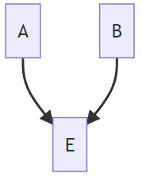
Conditional Independence (d-separation)
d-separation: “d” stands for dependence.
Blocking
Paths and associations can be blocked by conditioning on nodes in the path.
However, the opposite situation occurs in inverted paths if a collider is conditioned on.
Rules of d-separation
A path is d-separated by a set of nodes C if:
It contains a chain (e.g., \(D\rightarrow E\rightarrow F\)) and the middle part is in C (i.e., \(E\))
Example D is temperature, E is sidewalks are icy, and F is someone falls. If we restrict to situation where sidewalks are icy (condition on G), then temperature and falling are not associated via this path.
It contains a fork (e.g., \(D\leftarrow E \rightarrow F\)) and the middle part is in C (i.e., \(E\))
In this path, D and F are dependent because of E. If E is given or fixed, E no longer affects D and F. Hence, they are independent (i.e., the path is blocked).
It contains an inverted fork (e.g., \(D\rightarrow E\leftarrow F\)) and the middle part is NOT in C, nor are any descendants of it. In other words, no need to control anything in this path where \(E\) is collider and the relation between \(D\) and \(F\) is independent.
Example \(D\) is the state of an ON/OFF switch, while \(F\) is the state of another switch. Both switches control the same light. We decide the state of \(D\) and \(F\) by flipping a fair coin, respectively. \(E\) is the event that the light is ON, where the light is ON if only if both switches are ON.
Hence, \(D\) and \(F\) are independent if the information on \(E\) is not known. In contrast, \(D\) and \(F\) are dependent if \(E\) is given/controlled.
Confounding Revisited
Confounders
A confounder is a variable that affects both the treatment and the outcome.
Example
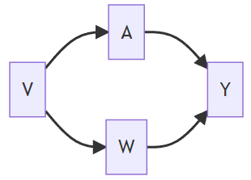
V affects A directly and Y indirectly through W
V is a confounder in the relation between A and Y
Frontdoor Paths
A frontdoor path from A to Y is one that begins with an arrow emanating out of A.
Backdoor Paths
A backdoor path from treatment A to outcome Y is a path from A to Y that travels through arrows going into A.
Note: A path is a link between two variables regardless of arrow directions
Example
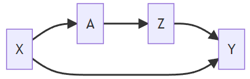
Frontdoor path: \(A\rightarrow Z\rightarrow Y\)
Our interest is in the causal relationship between A and Y, where a part of this relationship is through the effect that A has on Z. It is not something we are concerned about at this point. We are interested in just how A affects Y regardless of what path it takes to get there.
Backdoor path: \(A\leftarrow X \rightarrow Y\)
This backdoor path does not involve any arrows coming out of A. So there’s no treatment effect involved there. But A and Y are still associated with each other through that path. So this is something we have to worry about. Because if we look at just marginal associations between A and Y, some of that association will be due to a causal effect of A and Y, while some of it also could be because X causes both A and Y. Backdoor paths confound the relationship between A and Y and need to be blocked.
Backdoor Path Criterion
A set of variables X is sufficient to control for confounding if:
it blocks all backdoor paths from treatment to outcome
it does not include any descendants of treatment.
Example
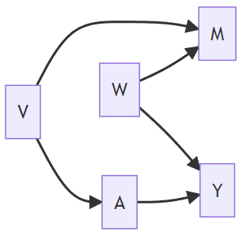
There is one backdoor path from A to Y, that is, \(A\leftarrow V\rightarrow M\leftarrow W\rightarrow Y\)
It is blocked by a collider M
No confounding (Information from V and W does not flow to Y and A because of M)
Set of variables that are sufficient to control for confounding:
Solutions: {},{V},{W},{M, W}, {M, V}, {M, V, W}
Never only control {M} since it will open a path between A and Y that is not causal
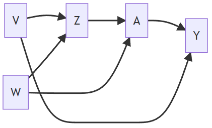
There are two paths
\(A\leftarrow Z\leftarrow V\rightarrow Y\)
No colliders
Solutions: {Z}, {V}, or {Z, V}
\(A\leftarrow W\rightarrow Z\leftarrow V\rightarrow Y\)
Z is a collider
Solutions: {V}, or {Z, V}, {Z, W}, and {Z, V, W}
Once we control for Z, we need to block the backdoor path by including V, or W, or V and W
Summary
To use the backdoor path criterion, we are required to know the whole DAG.
Disjunctive Cause Criterion
We do not need to know the whole graph, but rather, the list of variables that affect exposure or outcome.
Example
Observed pre-treatment variables: {M, W, V}
Unobserved pre-treatment variables: {U1, U2}
Suppose W and V are causes of A, Y, or both and M is not a cause of either A or Y
Solution 1: Use all pre-treatment covariates, i.e., {M, W, V}
Solution 2: Use variables based on disjunctive cause criterion, i.e., {W, V}
Let’s check if these solutions fit in the DAG for \(A\rightarrow Y\)
Hypothetical DAG 1
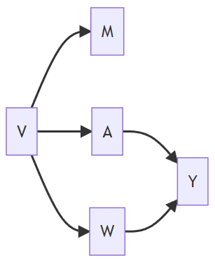
| Satisfies Backdoor Path Criterion | |
|---|---|
| Solution 1 {M, W, V} | Yes |
| Solution 2 {W, V} | Yes |
Hypothetical DAG 2
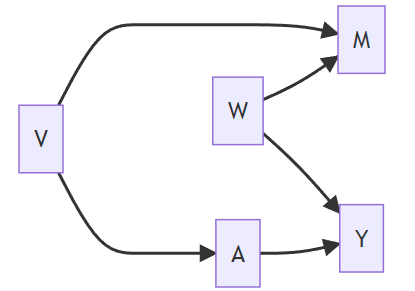
| Satisfies Backdoor Path Criterion | |
|---|---|
| Solution 1 {M, W, V} | Yes |
| Solution 2 {W, V} | Yes |
Hypothetical DAG 3
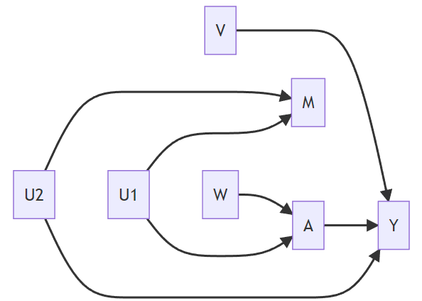
| Satisfies Backdoor Path Criterion | |
|---|---|
| Solution 1 {M, W, V} | No (b/c M opens the backdoor path) |
| Solution 2 {W, V} | Yes |
Hypothetical DAG 4
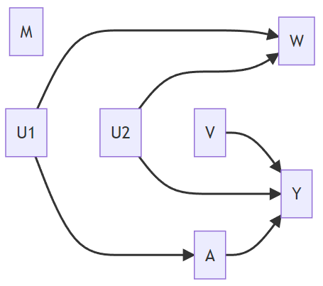
| Satisfies Backdoor Path Criterion | |
|---|---|
| Solution 1 {M, W, V} | No (b/c W opens the backdoor path) |
| Solution 2 {W, V} | No (b/c W opens the backdoor path) |
Summary
The disjunctive cause criterion:
does not always select the smallest set of variables to control for (e.g., if we only have one collider in the whole DAG, the smallest set is \(\empty\), that is, doing nothing)
but is conceptually simpler (i.e., list variables that are causes of treatment or outcome or both)
is guaranteed to select a set of variables that are sufficient to control for confounding if
such a set exists
all of the observed causes of A and Y are correctly identified (no need to know the whole DAG but do have to know about the relationship between observed variables)